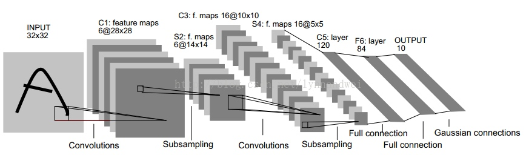
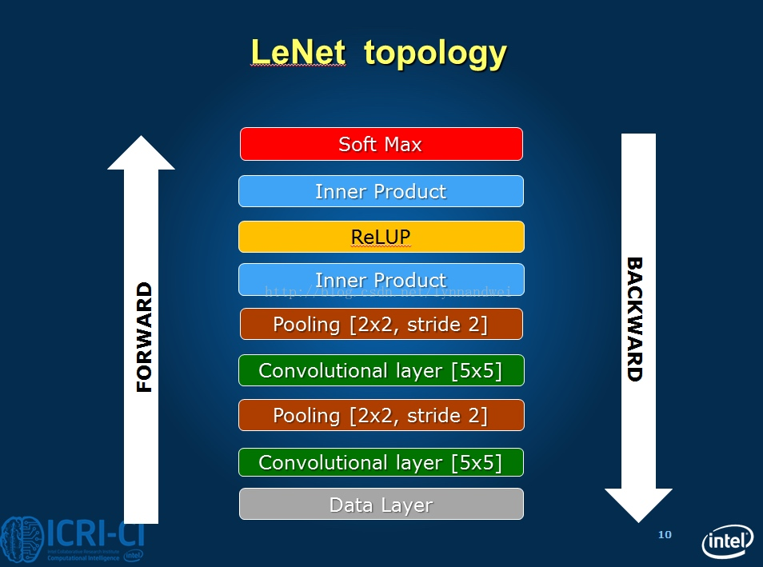

关于caffe环境的搭建暂时不做讨论，之后有时间整理一下（mac系统上cpu-only的caffe环境搭建）。
LeNet-5模型描述
caffe框架中给的LeNet-5模型与原版有所不同，其中将Sigmoid激活函数换成了ReLu，它的描述文件为examples/mnist/lenet_train_test.prototxt
，它的内容主要为：
name: "LeNet" //网络（Net）的名称为LeNet
layer { //定义一个层（Layer）
name: "mnist" //层的名称为mnist
type: "Data" //层的类型为数据层
top: "data" //层的输出blob有两个：data和label
top: "label"
include {
phase: TRAIN //表明该层参数只在训练阶段有效
}
transform_param {
scale: 0.00390625 //数据变换使用的数据缩放因子
}
data_param { //数据层参数
source: "examples/mnist/mnist_train_lmdb" //LMDB的路径
batch_size: 64 //批量数目，一次性读取64张图
backend: LMDB //数据格式为LMDB
}
}
layer { //一个新的数据层，名字也叫mnist，输出blob也是data和Label，但是这里定义的参数只在分类阶段有效
name: "mnist"
type: "Data"
top: "data"
top: "label"
include {
phase: TEST //表明只在测试分类阶段有效
}
transform_param {
scale: 0.00390625
}
data_param {
source: "examples/mnist/mnist_test_lmdb"
batch_size: 100
backend: LMDB
}
}
layer {
name: "conv1" //定义一个新的卷积层conv1，输入blob为data，输出blob为conv1
type: "Convolution"
bottom: "data"
top: "conv1"
param {
lr_mult: 1 //权值学习速率倍乘因子，1蓓表示与全局参数一致
}
param {
lr_mult: 2 //bias学习速率倍乘因子，是全局参数的两倍
}
convolution_param { //卷积计算参数
num_output: 20 //输出feature map数目为20
kernel_size: 5 //卷积核尺寸，5*5
stride: 1 //卷积输出跳跃间隔，1表示连续输出，无跳跃
weight_filler { //权值使用Xavier填充器
type: "xavier"
}
bias_filler { //bias使用常熟填充器，默认为0
type: "constant"
}
}
}
layer { //定义新的下采样层pool1，输入blob为conv1，输出blob为pool1
name: "pool1"
type: "Pooling"
bottom: "conv1"
top: "pool1"
pooling_param { //下采样参数
pool: MAX //使用最大值下采样方法
kernel_size: 2 //下采样窗口尺寸为2*2
stride: 2 //下采样输出跳跃间隔2*2
}
}
layer { //新的卷积层，和conv1类似
name: "conv2"
type: "Convolution"
bottom: "pool1"
top: "conv2"
param {
lr_mult: 1
}
param {
lr_mult: 2
}
convolution_param {
num_output: 50
kernel_size: 5
stride: 1
weight_filler {
type: "xavier"
}
bias_filler {
type: "constant"
}
}
}
layer { //新的下采样层，和pool1类似
name: "pool2"
type: "Pooling"
bottom: "conv2"
top: "pool2"
pooling_param {
pool: MAX
kernel_size: 2
stride: 2
}
}
layer { //新的全连接层，输入blob为pool2，输出blob为ip1
name: "ip1"
type: "InnerProduct"
bottom: "pool2"
top: "ip1"
param {
lr_mult: 1
}
param {
lr_mult: 2
}
inner_product_param { //全连接层参数
num_output: 500 //该层输出元素个数为500
weight_filler {
type: "xavier"
}
bias_filler {
type: "constant"
}
}
}
layer { //新的非线性层，用ReLU方法
name: "relu1"
type: "ReLU"
bottom: "ip1"
top: "ip1"
}
layer {
name: "ip2"
type: "InnerProduct"
bottom: "ip1"
top: "ip2"
param {
lr_mult: 1
}
param {
lr_mult: 2
}
inner_product_param {
num_output: 10
weight_filler {
type: "xavier"
}
bias_filler {
type: "constant"
}
}
}
layer { //分类准确率层，输入blob为ip2和Label，输出blob为accuracy，该层用于计算分类准确率
name: "accuracy"
type: "Accuracy"
bottom: "ip2"
bottom: "label"
top: "accuracy"
include {
phase: TEST
}
}
layer { //损失层，损失函数SoftmaxLoss，输入blob为ip2和label，输出blob为loss
name: "loss"
type: "SoftmaxWithLoss"
bottom: "ip2"
bottom: "label"
top: "loss"
}
LeNet模型原图为：


训练超参数：
上面已近给出了LeNet模型中的网络结构图和一些参数定义，下面我们正式来训练，这是一个分类准确率可以达到99%以上的模型。
首先进入caffe所在目录：
执行：examples/mnist/train_lenet.sh
train_lenet.sh的代码为：
#!/usr/bin/env sh
set -e #暂时不知道具体作用
./build/tools/caffe train --solver=examples/mnist/lenet_solver.prototxt $@
这里调用了之前编译好的build/tools/caffe.bin二进制文件，参数为：--solver=examples/mnist/lenet_solver.prototxt $@指定了训练超参数文件，内容如下：
# The train/test net protocol buffer definition
net: "examples/mnist/lenet_train_test.prototxt"
# test_iter specifies how many forward passes the test should carry out.
# In the case of MNIST, we have test batch size 100 and 100 test iterations,
# covering the full 10,000 testing images.
test_iter: 100
# Carry out testing every 500 training iterations.（训练时每迭代500次，进行一次预测）
test_interval: 500
# The base learning rate, momentum and the weight decay of the network.（网络的基础学习速率，冲量和衰减量）
base_lr: 0.01
momentum: 0.9
weight_decay: 0.0005
# The learning rate policy（学习速率的衰减策略）
lr_policy: "inv"
gamma: 0.0001
power: 0.75
# Display every 100 iterations（每100次迭代，在屏幕上打印一次运行log）
display: 100
# The maximum number of iterations
max_iter: 10000
# snapshot intermediate results（每5000次迭代打印一次快照）
snapshot: 5000
snapshot_prefix: "examples/mnist/lenet"
# solver mode: CPU or GPU（求解模式为CPU模式，因为mac没有N卡）
solver_mode: CPU
训练日志
执行上面examples/mnist/train_lenet.sh文件后会产生如下的日志输出：
//使用cpu模式运行
I0513 11:18:42.330993 3659862976 caffe.cpp:211] Use CPU.
I0513 11:18:42.331964 3659862976 solver.cpp:44] Initializing solver from parameters:
//打印训练超参数文件lenet_solver.prototxt中经过解析的内容
test_iter: 100
test_interval: 500
base_lr: 0.01
display: 100
max_iter: 10000
lr_policy: "inv"
gamma: 0.0001
power: 0.75
momentum: 0.9
weight_decay: 0.0005
snapshot: 5000
snapshot_prefix: "examples/mnist/lenet"
solver_mode: CPU
net: "examples/mnist/lenet_train_test.prototxt"
train_state {
level: 0
stage: ""
}
I0513 11:18:42.332221 3659862976 solver.cpp:87] Creating training net from net file: examples/mnist/lenet_train_test.prototxt
//解析CNN网络描述文件中的网络参数，创建训练网络
I0513 11:18:42.332438 3659862976 net.cpp:294] The NetState phase (0) differed from the phase (1) specified by a rule in layer mnist
I0513 11:18:42.332453 3659862976 net.cpp:294] The NetState phase (0) differed from the phase (1) specified by a rule in layer accuracy
I0513 11:18:42.332459 3659862976 net.cpp:51] Initializing net from parameters:
//打印训练网路参数描述
name: "LeNet"
state {
phase: TRAIN
level: 0
stage: ""
}
layer {
name: "mnist"
type: "Data"
top: "data"
top: "label"
include {
phase: TRAIN
}
transform_param {
scale: 0.00390625
}
data_param {
source: "examples/mnist/mnist_train_lmdb"
batch_size: 64
backend: LMDB
}
}
//........中间省略
layer {
name: "loss"
type: "SoftmaxWithLoss"
bottom: "ip2"
bottom: "label"
top: "loss"
}
I0513 11:18:42.332698 3659862976 layer_factory.hpp:77] Creating layer mnist
I0513 11:18:42.332906 3659862976 db_lmdb.cpp:35] Opened lmdb examples/mnist/mnist_train_lmdb
I0513 11:18:42.332963 3659862976 net.cpp:84] Creating Layer mnist
//产生两个输出，data为图片数据，label为标签数据
I0513 11:18:42.332970 3659862976 net.cpp:380] mnist -> data
I0513 11:18:42.332989 3659862976 net.cpp:380] mnist -> label
//之后打开了训练集LMDB，data为四维数组，又称blob，尺寸为64,1,28,28
I0513 11:18:42.333026 3659862976 data_layer.cpp:45] output data size: 64,1,28,28
I0513 11:18:42.337728 3659862976 net.cpp:122] Setting up mnist
I0513 11:18:42.337738 3659862976 net.cpp:129] Top shape: 64 1 28 28 (50176)
I0513 11:18:42.337759 3659862976 net.cpp:129] Top shape: 64 (64)
//统计占用内存，会逐层累加
I0513 11:18:42.337762 3659862976 net.cpp:137] Memory required for data: 200960
//盖一楼，conv1
I0513 11:18:42.337769 3659862976 layer_factory.hpp:77] Creating layer conv1
I0513 11:18:42.337776 3659862976 net.cpp:84] Creating Layer conv1
//conv1需要一个输入data（来自上一层mnist），产生一个输出conv1(送入下一层)
I0513 11:18:42.337780 3659862976 net.cpp:406] conv1 <- data
I0513 11:18:42.337785 3659862976 net.cpp:380] conv1 -> conv1
I0513 11:18:42.337836 3659862976 net.cpp:122] Setting up conv1
//conv1的输出尺寸为（64,20,24,24）
I0513 11:18:42.337842 3659862976 net.cpp:129] Top shape: 64 20 24 24 (737280)
//统计内存逐层累加
I0513 11:18:42.337847 3659862976 net.cpp:137] Memory required for data: 3150080
I0513 11:18:42.337853 3659862976 layer_factory.hpp:77] Creating layer pool1
//中间层创建类似
I0513 11:18:42.337877 3659862976 net.cpp:84] Creating Layer pool1
I0513 11:18:42.337882 3659862976 net.cpp:406] pool1 <- conv1
I0513 11:18:42.337887 3659862976 net.cpp:380] pool1 -> pool1
I0513 11:18:42.337895 3659862976 net.cpp:122] Setting up pool1
I0513 11:18:42.337899 3659862976 net.cpp:129] Top shape: 64 20 12 12 (184320)
I0513 11:18:42.337904 3659862976 net.cpp:137] Memory required for data: 3887360
I0513 11:18:42.337908 3659862976 layer_factory.hpp:77] Creating layer conv2
I0513 11:18:42.337913 3659862976 net.cpp:84] Creating Layer conv2
I0513 11:18:42.337916 3659862976 net.cpp:406] conv2 <- pool1
I0513 11:18:42.337921 3659862976 net.cpp:380] conv2 -> conv2
I0513 11:18:42.338141 3659862976 net.cpp:122] Setting up conv2
I0513 11:18:42.338146 3659862976 net.cpp:129] Top shape: 64 50 8 8 (204800)
I0513 11:18:42.338162 3659862976 net.cpp:137] Memory required for data: 4706560
I0513 11:18:42.338167 3659862976 layer_factory.hpp:77] Creating layer pool2
I0513 11:18:42.338174 3659862976 net.cpp:84] Creating Layer pool2
I0513 11:18:42.338178 3659862976 net.cpp:406] pool2 <- conv2
I0513 11:18:42.338182 3659862976 net.cpp:380] pool2 -> pool2
I0513 11:18:42.338210 3659862976 net.cpp:122] Setting up pool2
I0513 11:18:42.338215 3659862976 net.cpp:129] Top shape: 64 50 4 4 (51200)
I0513 11:18:42.338220 3659862976 net.cpp:137] Memory required for data: 4911360
I0513 11:18:42.338224 3659862976 layer_factory.hpp:77] Creating layer ip1
I0513 11:18:42.338232 3659862976 net.cpp:84] Creating Layer ip1
I0513 11:18:42.338235 3659862976 net.cpp:406] ip1 <- pool2
I0513 11:18:42.338240 3659862976 net.cpp:380] ip1 -> ip1
I0513 11:18:42.341404 3659862976 net.cpp:122] Setting up ip1
I0513 11:18:42.341413 3659862976 net.cpp:129] Top shape: 64 500 (32000)
I0513 11:18:42.341418 3659862976 net.cpp:137] Memory required for data: 5039360
I0513 11:18:42.341424 3659862976 layer_factory.hpp:77] Creating layer relu1
I0513 11:18:42.341433 3659862976 net.cpp:84] Creating Layer relu1
I0513 11:18:42.341435 3659862976 net.cpp:406] relu1 <- ip1
I0513 11:18:42.341440 3659862976 net.cpp:367] relu1 -> ip1 (in-place)
I0513 11:18:42.341444 3659862976 net.cpp:122] Setting up relu1
I0513 11:18:42.341449 3659862976 net.cpp:129] Top shape: 64 500 (32000)
I0513 11:18:42.341451 3659862976 net.cpp:137] Memory required for data: 5167360
I0513 11:18:42.341455 3659862976 layer_factory.hpp:77] Creating layer ip2
I0513 11:18:42.341470 3659862976 net.cpp:84] Creating Layer ip2
I0513 11:18:42.341473 3659862976 net.cpp:406] ip2 <- ip1
I0513 11:18:42.341478 3659862976 net.cpp:380] ip2 -> ip2
I0513 11:18:42.341531 3659862976 net.cpp:122] Setting up ip2
I0513 11:18:42.341536 3659862976 net.cpp:129] Top shape: 64 10 (640)
I0513 11:18:42.341539 3659862976 net.cpp:137] Memory required for data: 5169920
//盖最后一层loss
I0513 11:18:42.341544 3659862976 layer_factory.hpp:77] Creating layer loss
I0513 11:18:42.341550 3659862976 net.cpp:84] Creating Layer loss
//该层需要两个输入ip2和label，产生一个输出loss
I0513 11:18:42.341554 3659862976 net.cpp:406] loss <- ip2
I0513 11:18:42.341557 3659862976 net.cpp:406] loss <- label
I0513 11:18:42.341563 3659862976 net.cpp:380] loss -> loss
I0513 11:18:42.341572 3659862976 layer_factory.hpp:77] Creating layer loss
I0513 11:18:42.341583 3659862976 net.cpp:122] Setting up loss
//输出loss尺寸为1，loss weight参数为1
I0513 11:18:42.341586 3659862976 net.cpp:129] Top shape: (1)
I0513 11:18:42.341590 3659862976 net.cpp:132] with loss weight 1
I0513 11:18:42.341598 3659862976 net.cpp:137] Memory required for data: 5169924
//从后往前统计哪些层需要做反向传播计算（BP）
I0513 11:18:42.341601 3659862976 net.cpp:198] loss needs backward computation.
I0513 11:18:42.341606 3659862976 net.cpp:198] ip2 needs backward computation.
I0513 11:18:42.341609 3659862976 net.cpp:198] relu1 needs backward computation.
I0513 11:18:42.341614 3659862976 net.cpp:198] ip1 needs backward computation.
I0513 11:18:42.341616 3659862976 net.cpp:198] pool2 needs backward computation.
I0513 11:18:42.341620 3659862976 net.cpp:198] conv2 needs backward computation.
I0513 11:18:42.341624 3659862976 net.cpp:198] pool1 needs backward computation.
I0513 11:18:42.341627 3659862976 net.cpp:198] conv1 needs backward computation.
I0513 11:18:42.341631 3659862976 net.cpp:200] mnist does not need backward computation.
I0513 11:18:42.341655 3659862976 net.cpp:242] This network produces output loss
//盖楼完毕
I0513 11:18:42.341662 3659862976 net.cpp:255] Network initialization done.
//还需要创建测试网络，在盖一次楼
I0513 11:18:42.341949 3659862976 solver.cpp:172] Creating test net (#0) specified by net file: examples/mnist/lenet_train_test.prototxt
I0513 11:18:42.341986 3659862976 net.cpp:294] The NetState phase (1) differed from the phase (0) specified by a rule in layer mnist
I0513 11:18:42.341996 3659862976 net.cpp:51] Initializing net
from parameters:
//类似于第一座楼的情况，只是地基mnist改了一下lmdb源和输出尺寸，顶楼加了一个accuracy阁楼
name: "LeNet"
state {
phase: TEST
}
layer {
name: "mnist"
type: "Data"
top: "data"
top: "label"
include {
phase: TEST
}
transform_param {
scale: 0.00390625
}
data_param {
source: "examples/mnist/mnist_test_lmdb"
batch_size: 100
backend: LMDB
}
}
//....中间重复，不表
layer {
name: "accuracy"
type: "Accuracy"
bottom: "ip2"
bottom: "label"
top: "accuracy"
include {
phase: TEST
}
}
layer {
name: "loss"
type: "SoftmaxWithLoss"
bottom: "ip2"
bottom: "label"
top: "loss"
}
//具体盖楼过程与训练网络类似
I0513 11:18:42.342216 3659862976 layer_factory.hpp:77] Creating layer mnist
I0513 11:18:42.342300 3659862976 db_lmdb.cpp:35] Opened lmdb examples/mnist/mnist_test_lmdb
I0513 11:18:42.342319 3659862976 net.cpp:84] Creating Layer mnist
I0513 11:18:42.342329 3659862976 net.cpp:380] mnist -> data
I0513 11:18:42.342335 3659862976 net.cpp:380] mnist -> label
I0513 11:18:42.342345 3659862976 data_layer.cpp:45] output data size: 100,1,28,28
I0513 11:18:42.343029 3659862976 net.cpp:122] Setting up mnist
I0513 11:18:42.343037 3659862976 net.cpp:129] Top shape: 100 1 28 28 (78400)
I0513 11:18:42.343057 3659862976 net.cpp:129] Top shape: 100 (100)
I0513 11:18:42.343061 3659862976 net.cpp:137] Memory required for data: 314000
I0513 11:18:42.343065 3659862976 layer_factory.hpp:77] Creating layer label_mnist_1_split
I0513 11:18:42.343073 3659862976 net.cpp:84] Creating Layer label_mnist_1_split
I0513 11:18:42.343077 3659862976 net.cpp:406] label_mnist_1_split <- label
I0513 11:18:42.343082 3659862976 net.cpp:380] label_mnist_1_split -> label_mnist_1_split_0
I0513 11:18:42.343087 3659862976 net.cpp:380] label_mnist_1_split -> label_mnist_1_split_1
I0513 11:18:42.343093 3659862976 net.cpp:122] Setting up label_mnist_1_split
I0513 11:18:42.343097 3659862976 net.cpp:129] Top shape: 100 (100)
I0513 11:18:42.343101 3659862976 net.cpp:129] Top shape: 100 (100)
I0513 11:18:42.343106 3659862976 net.cpp:137] Memory required for data: 314800
I0513 11:18:42.343109 3659862976 layer_factory.hpp:77] Creating layer conv1
I0513 11:18:42.343137 3659862976 net.cpp:84] Creating Layer conv1
I0513 11:18:42.343144 3659862976 net.cpp:406] conv1 <- data
I0513 11:18:42.343152 3659862976 net.cpp:380] conv1 -> conv1
I0513 11:18:42.343175 3659862976 net.cpp:122] Setting up conv1
I0513 11:18:42.343181 3659862976 net.cpp:129] Top shape: 100 20 24 24 (1152000)
I0513 11:18:42.343186 3659862976 net.cpp:137] Memory required for data: 4922800
I0513 11:18:42.343196 3659862976 layer_factory.hpp:77] Creating layer pool1
I0513 11:18:42.343206 3659862976 net.cpp:84] Creating Layer pool1
I0513 11:18:42.343214 3659862976 net.cpp:406] pool1 <- conv1
I0513 11:18:42.343219 3659862976 net.cpp:380] pool1 -> pool1
I0513 11:18:42.343228 3659862976 net.cpp:122] Setting up pool1
I0513 11:18:42.343232 3659862976 net.cpp:129] Top shape: 100 20 12 12 (288000)
I0513 11:18:42.343236 3659862976 net.cpp:137] Memory required for data: 6074800
I0513 11:18:42.343240 3659862976 layer_factory.hpp:77] Creating layer conv2
I0513 11:18:42.343245 3659862976 net.cpp:84] Creating Layer conv2
I0513 11:18:42.343250 3659862976 net.cpp:406] conv2 <- pool1
I0513 11:18:42.343253 3659862976 net.cpp:380] conv2 -> conv2
I0513 11:18:42.343482 3659862976 net.cpp:122] Setting up conv2
I0513 11:18:42.343488 3659862976 net.cpp:129] Top shape: 100 50 8 8 (320000)
I0513 11:18:42.343503 3659862976 net.cpp:137] Memory required for data: 7354800
I0513 11:18:42.343509 3659862976 layer_factory.hpp:77] Creating layer pool2
I0513 11:18:42.343513 3659862976 net.cpp:84] Creating Layer pool2
I0513 11:18:42.343518 3659862976 net.cpp:406] pool2 <- conv2
I0513 11:18:42.343521 3659862976 net.cpp:380] pool2 -> pool2
I0513 11:18:42.343526 3659862976 net.cpp:122] Setting up pool2
I0513 11:18:42.343530 3659862976 net.cpp:129] Top shape: 100 50 4 4 (80000)
I0513 11:18:42.343534 3659862976 net.cpp:137] Memory required for data: 7674800
I0513 11:18:42.343538 3659862976 layer_factory.hpp:77] Creating layer ip1
I0513 11:18:42.343564 3659862976 net.cpp:84] Creating Layer ip1
I0513 11:18:42.343569 3659862976 net.cpp:406] ip1 <- pool2
I0513 11:18:42.343575 3659862976 net.cpp:380] ip1 -> ip1
I0513 11:18:42.346873 3659862976 net.cpp:122] Setting up ip1
I0513 11:18:42.346884 3659862976 net.cpp:129] Top shape: 100 500 (50000)
I0513 11:18:42.346889 3659862976 net.cpp:137] Memory required for data: 7874800
I0513 11:18:42.346895 3659862976 layer_factory.hpp:77] Creating layer relu1
I0513 11:18:42.346901 3659862976 net.cpp:84] Creating Layer relu1
I0513 11:18:42.346905 3659862976 net.cpp:406] relu1 <- ip1
I0513 11:18:42.346909 3659862976 net.cpp:367] relu1 -> ip1 (in-place)
I0513 11:18:42.346915 3659862976 net.cpp:122] Setting up relu1
I0513 11:18:42.346917 3659862976 net.cpp:129] Top shape: 100 500 (50000)
I0513 11:18:42.346921 3659862976 net.cpp:137] Memory required for data: 8074800
I0513 11:18:42.346925 3659862976 layer_factory.hpp:77] Creating layer ip2
I0513 11:18:42.346931 3659862976 net.cpp:84] Creating Layer ip2
I0513 11:18:42.346935 3659862976 net.cpp:406] ip2 <- ip1
I0513 11:18:42.346938 3659862976 net.cpp:380] ip2 -> ip2
I0513 11:18:42.346987 3659862976 net.cpp:122] Setting up ip2
I0513 11:18:42.346992 3659862976 net.cpp:129] Top shape: 100 10 (1000)
I0513 11:18:42.346997 3659862976 net.cpp:137] Memory required for data: 8078800
//注意这里，ip2_ip2_0_split在网络描述中没有显示给出，是caffe解析后自动加上的
I0513 11:18:42.347002 3659862976 layer_factory.hpp:77] Creating layer ip2_ip2_0_split
I0513 11:18:42.347007 3659862976 net.cpp:84] Creating Layer ip2_ip2_0_split
//ip2_ip2_0_split接受一个输入ip2，产生两个输出ip2_ip2_0_split_0和ip2_ip2_0_split_1，是复制关系
I0513 11:18:42.347010 3659862976 net.cpp:406] ip2_ip2_0_split <- ip2
I0513 11:18:42.347014 3659862976 net.cpp:380] ip2_ip2_0_split -> ip2_ip2_0_split_0
I0513 11:18:42.347019 3659862976 net.cpp:380] ip2_ip2_0_split -> ip2_ip2_0_split_1
I0513 11:18:42.347024 3659862976 net.cpp:122] Setting up ip2_ip2_0_split
I0513 11:18:42.347028 3659862976 net.cpp:129] Top shape: 100 10 (1000)
I0513 11:18:42.347033 3659862976 net.cpp:129] Top shape: 100 10 (1000)
I0513 11:18:42.347036 3659862976 net.cpp:137] Memory required for data: 8086800
//ip2_ip2_0_split_0给了accuracy层
I0513 11:18:42.347039 3659862976 layer_factory.hpp:77] Creating layer accuracy
I0513 11:18:42.347069 3659862976 net.cpp:84] Creating Layer accuracy
I0513 11:18:42.347074 3659862976 net.cpp:406] accuracy <- ip2_ip2_0_split_0
I0513 11:18:42.347077 3659862976 net.cpp:406] accuracy <- label_mnist_1_split_0
I0513 11:18:42.347082 3659862976 net.cpp:380] accuracy -> accuracy
I0513 11:18:42.347088 3659862976 net.cpp:122] Setting up accuracy
//accuracy层输出尺寸为1，即分类准确率
I0513 11:18:42.347091 3659862976 net.cpp:129] Top shape: (1)
I0513 11:18:42.347095 3659862976 net.cpp:137] Memory required for data: 8086804
//ip2_ip2_0_split_1给了loss层
I0513 11:18:42.347100 3659862976 layer_factory.hpp:77] Creating layer loss
I0513 11:18:42.347103 3659862976 net.cpp:84] Creating Layer loss
I0513 11:18:42.347107 3659862976 net.cpp:406] loss <- ip2_ip2_0_split_1
I0513 11:18:42.347111 3659862976 net.cpp:406] loss <- label_mnist_1_split_1
I0513 11:18:42.347115 3659862976 net.cpp:380] loss -> loss
I0513 11:18:42.347121 3659862976 layer_factory.hpp:77] Creating layer loss
I0513 11:18:42.347131 3659862976 net.cpp:122] Setting up loss
I0513 11:18:42.347133 3659862976 net.cpp:129] Top shape: (1)
I0513 11:18:42.347137 3659862976 net.cpp:132] with loss weight 1
I0513 11:18:42.347143 3659862976 net.cpp:137] Memory required for data: 8086808
I0513 11:18:42.347147 3659862976 net.cpp:198] loss needs backward computation.
I0513 11:18:42.347151 3659862976 net.cpp:200] accuracy does not need backward computation.
I0513 11:18:42.347156 3659862976 net.cpp:198] ip2_ip2_0_split needs backward computation.
I0513 11:18:42.347159 3659862976 net.cpp:198] ip2 needs backward computation.
I0513 11:18:42.347162 3659862976 net.cpp:198] relu1 needs backward computation.
I0513 11:18:42.347167 3659862976 net.cpp:198] ip1 needs backward computation.
I0513 11:18:42.347169 3659862976 net.cpp:198] pool2 needs backward computation.
I0513 11:18:42.347173 3659862976 net.cpp:198] conv2 needs backward computation.
I0513 11:18:42.347177 3659862976 net.cpp:198] pool1 needs backward computation.
I0513 11:18:42.347180 3659862976 net.cpp:198] conv1 needs backward computation.
I0513 11:18:42.347184 3659862976 net.cpp:200] label_mnist_1_split does not need backward computation.
I0513 11:18:42.347189 3659862976 net.cpp:200] mnist does not need backward computation.
I0513 11:18:42.347193 3659862976 net.cpp:242] This network produces output accuracy
I0513 11:18:42.347196 3659862976 net.cpp:242] This network produces output loss
//第二座楼盖好了
I0513 11:18:42.347203 3659862976 net.cpp:255] Network initialization done.
//装修方案确定了
I0513 11:18:42.347247 3659862976 solver.cpp:56] Solver scaffolding done.
//开始装修
I0513 11:18:42.347271 3659862976 caffe.cpp:248] Starting Optimization
I0513 11:18:42.347275 3659862976 solver.cpp:272] Solving LeNet
I0513 11:18:42.347278 3659862976 solver.cpp:273] Learning Rate Policy: inv
//先测试一次，得到出事分类准确率和损失
I0513 11:18:42.348048 3659862976 solver.cpp:330] Iteration 0, Testing net (#0)
I0513 11:18:44.611253 57593856 data_layer.cpp:73] Restarting data prefetching from start.
I0513 11:18:44.703907 3659862976 solver.cpp:397] Test net output #0: accuracy = 0.077
I0513 11:18:44.703938 3659862976 solver.cpp:397] Test net output #1: loss = 2.41516 (* 1 = 2.41516 loss)
//现在分类效果肯定很差，准确率只有0.077，损失值约为2.3
I0513 11:18:44.741230 3659862976 solver.cpp:218] Iteration 0 (0 iter/s, 2.393s/100 iters), loss = 2.42047
//0次迭代后，依旧很差，训练网络没有accuracy输出，只有loss输出
I0513 11:18:44.741261 3659862976 solver.cpp:237] Train net output #0: loss = 2.42047 (* 1 = 2.42047 loss)
I0513 11:18:44.741287 3659862976 sgd_solver.cpp:105] Iteration 0, lr = 0.01
//迭代100次之后，效果就出来了，loss已经降到0.21（之前是2.42）
I0513 11:18:47.874459 3659862976 solver.cpp:218] Iteration 100 (31.9183 iter/s, 3.133s/100 iters), loss = 0.215375
I0513 11:18:47.874493 3659862976 solver.cpp:237] Train net output #0: loss = 0.215375 (* 1 = 0.215375 loss)
I0513 11:18:47.874500 3659862976 sgd_solver.cpp:105] Iteration 100, lr = 0.00992565
I0513 11:18:50.998973 3659862976 solver.cpp:218] Iteration 200 (32.0102 iter/s, 3.124s/100 iters), loss = 0.144389
I0513 11:18:50.999003 3659862976 solver.cpp:237] Train net output #0: loss = 0.144389 (* 1 = 0.144389 loss)
I0513 11:18:50.999011 3659862976 sgd_solver.cpp:105] Iteration 200, lr = 0.00985258
I0513 11:18:54.100409 3659862976 solver.cpp:218] Iteration 300 (32.2477 iter/s, 3.101s/100 iters), loss = 0.192488
I0513 11:18:54.100476 3659862976 solver.cpp:237] Train net output #0: loss = 0.192488 (* 1 = 0.192488 loss)
I0513 11:18:54.100483 3659862976 sgd_solver.cpp:105] Iteration 300, lr = 0.00978075
I0513 11:18:57.210686 3659862976 solver.cpp:218] Iteration 400 (32.1543 iter/s, 3.11s/100 iters), loss = 0.0663644
I0513 11:18:57.210728 3659862976 solver.cpp:237] Train net output #0: loss = 0.0663644 (* 1 = 0.0663644 loss)
I0513 11:18:57.210737 3659862976 sgd_solver.cpp:105] Iteration 400, lr = 0.00971013
//迭代500次之后，进行一次测试。
I0513 11:19:00.279249 3659862976 solver.cpp:330] Iteration 500, Testing net (#0)
I0513 11:19:02.608597 57593856 data_layer.cpp:73] Restarting data prefetching from start.
//发现准确度accuracy已经显著提升到0.9744了，loss为0.08
I0513 11:19:02.703658 3659862976 solver.cpp:397] Test net output #0: accuracy = 0.9744
I0513 11:19:02.703694 3659862976 solver.cpp:397] Test net output #1: loss = 0.0836155 (* 1 = 0.0836155 loss)
I0513 11:19:02.735476 3659862976 solver.cpp:218] Iteration 500 (18.1028 iter/s, 5.524s/100 iters), loss = 0.0916289
I0513 11:19:02.735512 3659862976 solver.cpp:237] Train net output #0: loss = 0.0916288 (* 1 = 0.0916288 loss)
I0513 11:19:02.735520 3659862976 sgd_solver.cpp:105] Iteration 500, lr = 0.00964069
I0513 11:19:05.931562 3659862976 solver.cpp:218] Iteration 600 (31.2891 iter/s, 3.196s/100 iters), loss = 0.0844364
I0513 11:19:05.931597 3659862976 solver.cpp:237] Train net output #0: loss = 0.0844363 (* 1 = 0.0844363 loss)
I0513 11:19:05.931604 3659862976 sgd_solver.cpp:105] Iteration 600, lr = 0.0095724
I0513 11:19:09.116649 3659862976 solver.cpp:218] Iteration 700 (31.3972 iter/s, 3.185s/100 iters), loss = 0.134004
I0513 11:19:09.116684 3659862976 solver.cpp:237] Train net output #0: loss = 0.134004 (* 1 = 0.134004 loss)
I0513 11:19:09.116691 3659862976 sgd_solver.cpp:105] Iteration 700, lr = 0.00950522
//中间是训练过程。。。。。。
I0513 11:22:17.536756 3659862976 solver.cpp:218] Iteration 4800 (19.3311 iter/s, 5.173s/100 iters), loss = 0.0179583
I0513 11:22:17.536806 3659862976 solver.cpp:237] Train net output #0: loss = 0.0179581 (* 1 = 0.0179581 loss)
I0513 11:22:17.536818 3659862976 sgd_solver.cpp:105] Iteration 4800, lr = 0.00745253
I0513 11:22:22.731861 3659862976 solver.cpp:218] Iteration 4900 (19.2493 iter/s, 5.195s/100 iters), loss = 0.00556874
I0513 11:22:22.731927 3659862976 solver.cpp:237] Train net output #0: loss = 0.00556857 (* 1 = 0.00556857 loss)
I0513 11:22:22.731940 3659862976 sgd_solver.cpp:105] Iteration 4900, lr = 0.00741498
//每迭代到5000次之后，打印一次快照，保存lenet_iter_5000.caffemodel和lenet_iter_5000.solverstate
I0513 11:22:28.143353 3659862976 solver.cpp:447] Snapshotting to binary proto file examples/mnist/lenet_iter_5000.caffemodel
I0513 11:22:28.167670 3659862976 sgd_solver.cpp:273] Snapshotting solver state to binary proto file examples/mnist/lenet_iter_5000.solverstate
I0513 11:22:28.171842 3659862976 solver.cpp:330] Iteration 5000, Testing net (#0)
I0513 11:22:32.514833 57593856 data_layer.cpp:73] Restarting data prefetching from start.
I0513 11:22:32.699314 3659862976 solver.cpp:397] Test net output #0: accuracy = 0.9888
I0513 11:22:32.699359 3659862976 solver.cpp:397] Test net output #1: loss = 0.0334435 (* 1 = 0.0334435 loss)
I0513 11:22:32.754936 3659862976 solver.cpp:218] Iteration 5000 (9.97705 iter/s, 10.023s/100 iters), loss = 0.0241056
I0513 11:22:32.754987 3659862976 solver.cpp:237] Train net output #0: loss = 0.0241055 (* 1 = 0.0241055 loss)
I0513 11:22:32.754999 3659862976 sgd_solver.cpp:105] Iteration 5000, lr = 0.00737788
//中间继续训练。。。。。
I0513 11:26:53.808578 3659862976 solver.cpp:218] Iteration 9900 (21.097 iter/s, 4.74s/100 iters), loss = 0.00466773
I0513 11:26:53.808624 3659862976 solver.cpp:237] Train net output #0: loss = 0.00466757 (* 1 = 0.00466757 loss)
I0513 11:26:53.808635 3659862976 sgd_solver.cpp:105] Iteration 9900, lr = 0.00596843
//最后一次打印快照
I0513 11:26:58.671659 3659862976 solver.cpp:447] Snapshotting to binary proto file examples/mnist/lenet_iter_10000.caffemodel
I0513 11:26:58.688323 3659862976 sgd_solver.cpp:273] Snapshotting solver state to binary proto file examples/mnist/lenet_iter_10000.solverstate
I0513 11:26:58.715297 3659862976 solver.cpp:310] Iteration 10000, loss = 0.00293942
I0513 11:26:58.715337 3659862976 solver.cpp:330] Iteration 10000, Testing net (#0)
I0513 11:27:02.099313 57593856 data_layer.cpp:73] Restarting data prefetching from start.
//最终分类准确率为99%
I0513 11:27:02.230465 3659862976 solver.cpp:397] Test net output #0: accuracy = 0.991
//最终loss值为0.03
I0513 11:27:02.230509 3659862976 solver.cpp:397] Test net output #1: loss = 0.0304018 (* 1 = 0.0304018 loss)
I0513 11:27:02.230518 3659862976 solver.cpp:315] Optimization Done.
I0513 11:27:02.230525 3659862976 caffe.cpp:259] Optimization Done.
//装修结束
用训练好的模型对数据进行预测
从上面的输出结果可以看到最终训练的模型权值存在lenet_iter_10000.caffemodal中，之后可以对测试数据集进行预测。运行如下命令就可以了：
➜ caffe git:(master) ✗ ./build/tools/caffe.bin test \
-model examples/mnist/lenet_train_test.prototxt \
-weights examples/mnist/lenet_iter_10000.caffemodel \
-iterations 100
上述命令解释：
./build/tools/caffe.bin test，表示只做预测（前向传播急速那），不进行参数更新（BP反向传播计算）
-model examples/mnist/lenet_train_test.prototxt ，指定模型描述文本文件
-weights examples/mnist/lenet_iter_10000.caffemodel ，指定模型预先训练好的权值文件
-iterations 100 ， 指定测试迭代次数。参与测试的样例数目为（iterations*batch_size）,batch_size在model prototxt中设定，为100时刚好覆盖全部10000个测试样本。
我们运行上述命令得到：
I0513 11:37:08.827889 3659862976 caffe.cpp:284] Use CPU.
I0513 11:37:08.830747 3659862976 net.cpp:294] The NetState phase (1) differed from the phase (0) specified by a rule in layer mnist
I0513 11:37:08.830780 3659862976 net.cpp:51] Initializing net from parameters:
name: "LeNet"
state {
phase: TEST
level: 0
stage: ""
}
layer {
name: "mnist"
type: "Data"
top: "data"
top: "label"
include {
phase: TEST
}
transform_param {
scale: 0.00390625
}
data_param {
source: "examples/mnist/mnist_test_lmdb"
batch_size: 100
backend: LMDB
}
}
layer {
name: "conv1"
type: "Convolution"
bottom: "data"
top: "conv1"
param {
lr_mult: 1
}
param {
lr_mult: 2
}
convolution_param {
num_output: 20
kernel_size: 5
stride: 1
weight_filler {
type: "xavier"
}
bias_filler {
type: "constant"
}
}
}
layer {
name: "pool1"
type: "Pooling"
bottom: "conv1"
top: "pool1"
pooling_param {
pool: MAX
kernel_size: 2
stride: 2
}
}
layer {
name: "conv2"
type: "Convolution"
bottom: "pool1"
top: "conv2"
param {
lr_mult: 1
}
param {
lr_mult: 2
}
convolution_param {
num_output: 50
kernel_size: 5
stride: 1
weight_filler {
type: "xavier"
}
bias_filler {
type: "constant"
}
}
}
layer {
name: "pool2"
type: "Pooling"
bottom: "conv2"
top: "pool2"
pooling_param {
pool: MAX
kernel_size: 2
stride: 2
}
}
layer {
name: "ip1"
type: "InnerProduct"
bottom: "pool2"
top: "ip1"
param {
lr_mult: 1
}
param {
lr_mult: 2
}
inner_product_param {
num_output: 500
weight_filler {
type: "xavier"
}
bias_filler {
type: "constant"
}
}
}
layer {
name: "relu1"
type: "ReLU"
bottom: "ip1"
top: "ip1"
}
layer {
name: "ip2"
type: "InnerProduct"
bottom: "ip1"
top: "ip2"
param {
lr_mult: 1
}
param {
lr_mult: 2
}
inner_product_param {
num_output: 10
weight_filler {
type: "xavier"
}
bias_filler {
type: "constant"
}
}
}
layer {
name: "accuracy"
type: "Accuracy"
bottom: "ip2"
bottom: "label"
top: "accuracy"
include {
phase: TEST
}
}
layer {
name: "loss"
type: "SoftmaxWithLoss"
bottom: "ip2"
bottom: "label"
top: "loss"
}
I0513 11:37:08.831130 3659862976 layer_factory.hpp:77] Creating layer mnist
I0513 11:37:08.831360 3659862976 db_lmdb.cpp:35] Opened lmdb examples/mnist/mnist_test_lmdb
I0513 11:37:08.831418 3659862976 net.cpp:84] Creating Layer mnist
I0513 11:37:08.831425 3659862976 net.cpp:380] mnist -> data
I0513 11:37:08.831444 3659862976 net.cpp:380] mnist -> label
I0513 11:37:08.831480 3659862976 data_layer.cpp:45] output data size: 100,1,28,28
I0513 11:37:08.836457 3659862976 net.cpp:122] Setting up mnist
I0513 11:37:08.836468 3659862976 net.cpp:129] Top shape: 100 1 28 28 (78400)
I0513 11:37:08.836488 3659862976 net.cpp:129] Top shape: 100 (100)
I0513 11:37:08.836491 3659862976 net.cpp:137] Memory required for data: 314000
I0513 11:37:08.836498 3659862976 layer_factory.hpp:77] Creating layer label_mnist_1_split
I0513 11:37:08.836505 3659862976 net.cpp:84] Creating Layer label_mnist_1_split
I0513 11:37:08.836509 3659862976 net.cpp:406] label_mnist_1_split <- label
I0513 11:37:08.836513 3659862976 net.cpp:380] label_mnist_1_split -> label_mnist_1_split_0
I0513 11:37:08.836519 3659862976 net.cpp:380] label_mnist_1_split -> label_mnist_1_split_1
I0513 11:37:08.836525 3659862976 net.cpp:122] Setting up label_mnist_1_split
I0513 11:37:08.836529 3659862976 net.cpp:129] Top shape: 100 (100)
I0513 11:37:08.836534 3659862976 net.cpp:129] Top shape: 100 (100)
I0513 11:37:08.836539 3659862976 net.cpp:137] Memory required for data: 314800
I0513 11:37:08.836542 3659862976 layer_factory.hpp:77] Creating layer conv1
I0513 11:37:08.836550 3659862976 net.cpp:84] Creating Layer conv1
I0513 11:37:08.836555 3659862976 net.cpp:406] conv1 <- data
I0513 11:37:08.836558 3659862976 net.cpp:380] conv1 -> conv1
I0513 11:37:08.836611 3659862976 net.cpp:122] Setting up conv1
I0513 11:37:08.836616 3659862976 net.cpp:129] Top shape: 100 20 24 24 (1152000)
I0513 11:37:08.836639 3659862976 net.cpp:137] Memory required for data: 4922800
I0513 11:37:08.836648 3659862976 layer_factory.hpp:77] Creating layer pool1
I0513 11:37:08.836653 3659862976 net.cpp:84] Creating Layer pool1
I0513 11:37:08.836658 3659862976 net.cpp:406] pool1 <- conv1
I0513 11:37:08.836661 3659862976 net.cpp:380] pool1 -> pool1
I0513 11:37:08.836671 3659862976 net.cpp:122] Setting up pool1
I0513 11:37:08.836675 3659862976 net.cpp:129] Top shape: 100 20 12 12 (288000)
I0513 11:37:08.836680 3659862976 net.cpp:137] Memory required for data: 6074800
I0513 11:37:08.836683 3659862976 layer_factory.hpp:77] Creating layer conv2
I0513 11:37:08.836691 3659862976 net.cpp:84] Creating Layer conv2
I0513 11:37:08.836695 3659862976 net.cpp:406] conv2 <- pool1
I0513 11:37:08.836700 3659862976 net.cpp:380] conv2 -> conv2
I0513 11:37:08.836917 3659862976 net.cpp:122] Setting up conv2
I0513 11:37:08.836923 3659862976 net.cpp:129] Top shape: 100 50 8 8 (320000)
I0513 11:37:08.836971 3659862976 net.cpp:137] Memory required for data: 7354800
I0513 11:37:08.837033 3659862976 layer_factory.hpp:77] Creating layer pool2
I0513 11:37:08.837041 3659862976 net.cpp:84] Creating Layer pool2
I0513 11:37:08.837045 3659862976 net.cpp:406] pool2 <- conv2
I0513 11:37:08.837049 3659862976 net.cpp:380] pool2 -> pool2
I0513 11:37:08.837059 3659862976 net.cpp:122] Setting up pool2
I0513 11:37:08.837062 3659862976 net.cpp:129] Top shape: 100 50 4 4 (80000)
I0513 11:37:08.837067 3659862976 net.cpp:137] Memory required for data: 7674800
I0513 11:37:08.837070 3659862976 layer_factory.hpp:77] Creating layer ip1
I0513 11:37:08.837076 3659862976 net.cpp:84] Creating Layer ip1
I0513 11:37:08.837080 3659862976 net.cpp:406] ip1 <- pool2
I0513 11:37:08.837085 3659862976 net.cpp:380] ip1 -> ip1
I0513 11:37:08.840445 3659862976 net.cpp:122] Setting up ip1
I0513 11:37:08.840461 3659862976 net.cpp:129] Top shape: 100 500 (50000)
I0513 11:37:08.840467 3659862976 net.cpp:137] Memory required for data: 7874800
I0513 11:37:08.840476 3659862976 layer_factory.hpp:77] Creating layer relu1
I0513 11:37:08.840487 3659862976 net.cpp:84] Creating Layer relu1
I0513 11:37:08.840492 3659862976 net.cpp:406] relu1 <- ip1
I0513 11:37:08.840497 3659862976 net.cpp:367] relu1 -> ip1 (in-place)
I0513 11:37:08.840504 3659862976 net.cpp:122] Setting up relu1
I0513 11:37:08.840507 3659862976 net.cpp:129] Top shape: 100 500 (50000)
I0513 11:37:08.840512 3659862976 net.cpp:137] Memory required for data: 8074800
I0513 11:37:08.840517 3659862976 layer_factory.hpp:77] Creating layer ip2
I0513 11:37:08.840523 3659862976 net.cpp:84] Creating Layer ip2
I0513 11:37:08.840528 3659862976 net.cpp:406] ip2 <- ip1
I0513 11:37:08.840533 3659862976 net.cpp:380] ip2 -> ip2
I0513 11:37:08.840591 3659862976 net.cpp:122] Setting up ip2
I0513 11:37:08.840597 3659862976 net.cpp:129] Top shape: 100 10 (1000)
I0513 11:37:08.840601 3659862976 net.cpp:137] Memory required for data: 8078800
I0513 11:37:08.840606 3659862976 layer_factory.hpp:77] Creating layer ip2_ip2_0_split
I0513 11:37:08.840612 3659862976 net.cpp:84] Creating Layer ip2_ip2_0_split
I0513 11:37:08.840616 3659862976 net.cpp:406] ip2_ip2_0_split <- ip2
I0513 11:37:08.840623 3659862976 net.cpp:380] ip2_ip2_0_split -> ip2_ip2_0_split_0
I0513 11:37:08.840631 3659862976 net.cpp:380] ip2_ip2_0_split -> ip2_ip2_0_split_1
I0513 11:37:08.840637 3659862976 net.cpp:122] Setting up ip2_ip2_0_split
I0513 11:37:08.840641 3659862976 net.cpp:129] Top shape: 100 10 (1000)
I0513 11:37:08.840646 3659862976 net.cpp:129] Top shape: 100 10 (1000)
I0513 11:37:08.840649 3659862976 net.cpp:137] Memory required for data: 8086800
I0513 11:37:08.840653 3659862976 layer_factory.hpp:77] Creating layer accuracy
I0513 11:37:08.840659 3659862976 net.cpp:84] Creating Layer accuracy
I0513 11:37:08.840663 3659862976 net.cpp:406] accuracy <- ip2_ip2_0_split_0
I0513 11:37:08.840668 3659862976 net.cpp:406] accuracy <- label_mnist_1_split_0
I0513 11:37:08.840672 3659862976 net.cpp:380] accuracy -> accuracy
I0513 11:37:08.840678 3659862976 net.cpp:122] Setting up accuracy
I0513 11:37:08.840708 3659862976 net.cpp:129] Top shape: (1)
I0513 11:37:08.840714 3659862976 net.cpp:137] Memory required for data: 8086804
I0513 11:37:08.840718 3659862976 layer_factory.hpp:77] Creating layer loss
I0513 11:37:08.840724 3659862976 net.cpp:84] Creating Layer loss
I0513 11:37:08.840728 3659862976 net.cpp:406] loss <- ip2_ip2_0_split_1
I0513 11:37:08.840733 3659862976 net.cpp:406] loss <- label_mnist_1_split_1
I0513 11:37:08.840737 3659862976 net.cpp:380] loss -> loss
I0513 11:37:08.840746 3659862976 layer_factory.hpp:77] Creating layer loss
I0513 11:37:08.840759 3659862976 net.cpp:122] Setting up loss
I0513 11:37:08.840762 3659862976 net.cpp:129] Top shape: (1)
I0513 11:37:08.840767 3659862976 net.cpp:132] with loss weight 1
I0513 11:37:08.840776 3659862976 net.cpp:137] Memory required for data: 8086808
I0513 11:37:08.840780 3659862976 net.cpp:198] loss needs backward computation.
I0513 11:37:08.840785 3659862976 net.cpp:200] accuracy does not need backward computation.
I0513 11:37:08.840790 3659862976 net.cpp:198] ip2_ip2_0_split needs backward computation.
I0513 11:37:08.840793 3659862976 net.cpp:198] ip2 needs backward computation.
I0513 11:37:08.840798 3659862976 net.cpp:198] relu1 needs backward computation.
I0513 11:37:08.840802 3659862976 net.cpp:198] ip1 needs backward computation.
I0513 11:37:08.840806 3659862976 net.cpp:198] pool2 needs backward computation.
I0513 11:37:08.840811 3659862976 net.cpp:198] conv2 needs backward computation.
I0513 11:37:08.840814 3659862976 net.cpp:198] pool1 needs backward computation.
I0513 11:37:08.840818 3659862976 net.cpp:198] conv1 needs backward computation.
I0513 11:37:08.840822 3659862976 net.cpp:200] label_mnist_1_split does not need backward computation.
I0513 11:37:08.840827 3659862976 net.cpp:200] mnist does not need backward computation.
I0513 11:37:08.840831 3659862976 net.cpp:242] This network produces output accuracy
I0513 11:37:08.840836 3659862976 net.cpp:242] This network produces output loss
I0513 11:37:08.840843 3659862976 net.cpp:255] Network initialization done.
I0513 11:37:08.843325 3659862976 caffe.cpp:290] Running for 100 iterations.
I0513 11:37:08.871536 3659862976 caffe.cpp:313] Batch 0, accuracy = 1
I0513 11:37:08.871567 3659862976 caffe.cpp:313] Batch 0, loss = 0.0085843
I0513 11:37:08.894382 3659862976 caffe.cpp:313] Batch 1, accuracy = 1
I0513 11:37:08.894414 3659862976 caffe.cpp:313] Batch 1, loss = 0.00573037
I0513 11:37:08.918002 3659862976 caffe.cpp:313] Batch 2, accuracy = 0.99
I0513 11:37:08.918031 3659862976 caffe.cpp:313] Batch 2, loss = 0.0333053
I0513 11:37:08.943091 3659862976 caffe.cpp:313] Batch 3, accuracy = 0.99
I0513 11:37:08.943127 3659862976 caffe.cpp:313] Batch 3, loss = 0.0271862
I0513 11:37:08.967147 3659862976 caffe.cpp:313] Batch 4, accuracy = 0.99
I0513 11:37:08.967177 3659862976 caffe.cpp:313] Batch 4, loss = 0.0571239
I0513 11:37:08.989929 3659862976 caffe.cpp:313] Batch 5, accuracy = 0.99
I0513 11:37:08.989961 3659862976 caffe.cpp:313] Batch 5, loss = 0.0569953
I0513 11:37:09.015426 3659862976 caffe.cpp:313] Batch 6, accuracy = 0.98
I0513 11:37:09.015463 3659862976 caffe.cpp:313] Batch 6, loss = 0.0698283
I0513 11:37:09.039398 3659862976 caffe.cpp:313] Batch 7, accuracy = 0.99
I0513 11:37:09.039432 3659862976 caffe.cpp:313] Batch 7, loss = 0.0349087
I0513 11:37:09.063937 3659862976 caffe.cpp:313] Batch 8, accuracy = 1
I0513 11:37:09.063967 3659862976 caffe.cpp:313] Batch 8, loss = 0.0115442
I0513 11:37:09.086630 3659862976 caffe.cpp:313] Batch 9, accuracy = 0.99
I0513 11:37:09.086663 3659862976 caffe.cpp:313] Batch 9, loss = 0.0361095
I0513 11:37:09.111706 3659862976 caffe.cpp:313] Batch 10, accuracy = 0.98
I0513 11:37:09.111735 3659862976 caffe.cpp:313] Batch 10, loss = 0.0702643
I0513 11:37:09.135445 3659862976 caffe.cpp:313] Batch 11, accuracy = 0.97
I0513 11:37:09.135478 3659862976 caffe.cpp:313] Batch 11, loss = 0.0508112
I0513 11:37:09.159065 3659862976 caffe.cpp:313] Batch 12, accuracy = 0.95
I0513 11:37:09.159097 3659862976 caffe.cpp:313] Batch 12, loss = 0.148118
I0513 11:37:09.181542 3659862976 caffe.cpp:313] Batch 13, accuracy = 0.98
I0513 11:37:09.181607 3659862976 caffe.cpp:313] Batch 13, loss = 0.036772
I0513 11:37:09.205440 3659862976 caffe.cpp:313] Batch 14, accuracy = 1
I0513 11:37:09.205476 3659862976 caffe.cpp:313] Batch 14, loss = 0.00694412
I0513 11:37:09.228198 3659862976 caffe.cpp:313] Batch 15, accuracy = 0.99
I0513 11:37:09.228229 3659862976 caffe.cpp:313] Batch 15, loss = 0.0389514
I0513 11:37:09.251550 3659862976 caffe.cpp:313] Batch 16, accuracy = 0.98
I0513 11:37:09.251581 3659862976 caffe.cpp:313] Batch 16, loss = 0.0298825
I0513 11:37:09.275153 3659862976 caffe.cpp:313] Batch 17, accuracy = 1
I0513 11:37:09.275182 3659862976 caffe.cpp:313] Batch 17, loss = 0.0170967
I0513 11:37:09.298004 3659862976 caffe.cpp:313] Batch 18, accuracy = 0.99
I0513 11:37:09.298035 3659862976 caffe.cpp:313] Batch 18, loss = 0.0189575
I0513 11:37:09.321348 3659862976 caffe.cpp:313] Batch 19, accuracy = 0.99
I0513 11:37:09.321379 3659862976 caffe.cpp:313] Batch 19, loss = 0.0455956
I0513 11:37:09.344025 3659862976 caffe.cpp:313] Batch 20, accuracy = 0.98
I0513 11:37:09.344058 3659862976 caffe.cpp:313] Batch 20, loss = 0.108723
I0513 11:37:09.368069 3659862976 caffe.cpp:313] Batch 21, accuracy = 0.98
I0513 11:37:09.368101 3659862976 caffe.cpp:313] Batch 21, loss = 0.0780955
I0513 11:37:09.390791 3659862976 caffe.cpp:313] Batch 22, accuracy = 0.99
I0513 11:37:09.390823 3659862976 caffe.cpp:313] Batch 22, loss = 0.0368689
I0513 11:37:09.414577 3659862976 caffe.cpp:313] Batch 23, accuracy = 0.97
I0513 11:37:09.414621 3659862976 caffe.cpp:313] Batch 23, loss = 0.0296016
I0513 11:37:09.437597 3659862976 caffe.cpp:313] Batch 24, accuracy = 0.97
I0513 11:37:09.437628 3659862976 caffe.cpp:313] Batch 24, loss = 0.0589915
I0513 11:37:09.460636 3659862976 caffe.cpp:313] Batch 25, accuracy = 0.99
I0513 11:37:09.460669 3659862976 caffe.cpp:313] Batch 25, loss = 0.0754509
I0513 11:37:09.483229 3659862976 caffe.cpp:313] Batch 26, accuracy = 0.99
I0513 11:37:09.483261 3659862976 caffe.cpp:313] Batch 26, loss = 0.118656
I0513 11:37:09.508059 3659862976 caffe.cpp:313] Batch 27, accuracy = 0.98
I0513 11:37:09.508092 3659862976 caffe.cpp:313] Batch 27, loss = 0.0222734
I0513 11:37:09.530911 3659862976 caffe.cpp:313] Batch 28, accuracy = 0.99
I0513 11:37:09.530943 3659862976 caffe.cpp:313] Batch 28, loss = 0.0315118
I0513 11:37:09.555687 3659862976 caffe.cpp:313] Batch 29, accuracy = 0.97
I0513 11:37:09.555721 3659862976 caffe.cpp:313] Batch 29, loss = 0.129427
I0513 11:37:09.579476 3659862976 caffe.cpp:313] Batch 30, accuracy = 1
I0513 11:37:09.579507 3659862976 caffe.cpp:313] Batch 30, loss = 0.0196561
I0513 11:37:09.602957 3659862976 caffe.cpp:313] Batch 31, accuracy = 1
I0513 11:37:09.602993 3659862976 caffe.cpp:313] Batch 31, loss = 0.00242798
I0513 11:37:09.626893 3659862976 caffe.cpp:313] Batch 32, accuracy = 0.99
I0513 11:37:09.626924 3659862976 caffe.cpp:313] Batch 32, loss = 0.0169622
I0513 11:37:09.650236 3659862976 caffe.cpp:313] Batch 33, accuracy = 1
I0513 11:37:09.650270 3659862976 caffe.cpp:313] Batch 33, loss = 0.00425847
I0513 11:37:09.673212 3659862976 caffe.cpp:313] Batch 34, accuracy = 0.99
I0513 11:37:09.673243 3659862976 caffe.cpp:313] Batch 34, loss = 0.0726783
I0513 11:37:09.696039 3659862976 caffe.cpp:313] Batch 35, accuracy = 0.95
I0513 11:37:09.696071 3659862976 caffe.cpp:313] Batch 35, loss = 0.173234
I0513 11:37:09.719209 3659862976 caffe.cpp:313] Batch 36, accuracy = 1
I0513 11:37:09.719241 3659862976 caffe.cpp:313] Batch 36, loss = 0.0126433
I0513 11:37:09.741852 3659862976 caffe.cpp:313] Batch 37, accuracy = 0.99
I0513 11:37:09.741884 3659862976 caffe.cpp:313] Batch 37, loss = 0.0380185
I0513 11:37:09.766039 3659862976 caffe.cpp:313] Batch 38, accuracy = 1
I0513 11:37:09.766072 3659862976 caffe.cpp:313] Batch 38, loss = 0.0161337
I0513 11:37:09.788811 3659862976 caffe.cpp:313] Batch 39, accuracy = 0.98
I0513 11:37:09.788844 3659862976 caffe.cpp:313] Batch 39, loss = 0.0317039
I0513 11:37:09.812556 3659862976 caffe.cpp:313] Batch 40, accuracy = 1
I0513 11:37:09.812587 3659862976 caffe.cpp:313] Batch 40, loss = 0.0283054
I0513 11:37:09.835418 3659862976 caffe.cpp:313] Batch 41, accuracy = 0.98
I0513 11:37:09.835450 3659862976 caffe.cpp:313] Batch 41, loss = 0.0595546
I0513 11:37:09.858765 3659862976 caffe.cpp:313] Batch 42, accuracy = 0.98
I0513 11:37:09.858793 3659862976 caffe.cpp:313] Batch 42, loss = 0.033258
I0513 11:37:09.881479 3659862976 caffe.cpp:313] Batch 43, accuracy = 1
I0513 11:37:09.881510 3659862976 caffe.cpp:313] Batch 43, loss = 0.00560485
I0513 11:37:09.906558 3659862976 caffe.cpp:313] Batch 44, accuracy = 1
I0513 11:37:09.906590 3659862976 caffe.cpp:313] Batch 44, loss = 0.0164246
I0513 11:37:09.932261 3659862976 caffe.cpp:313] Batch 45, accuracy = 0.99
I0513 11:37:09.932294 3659862976 caffe.cpp:313] Batch 45, loss = 0.047733
I0513 11:37:09.957159 3659862976 caffe.cpp:313] Batch 46, accuracy = 1
I0513 11:37:09.957190 3659862976 caffe.cpp:313] Batch 46, loss = 0.00406718
I0513 11:37:09.979852 3659862976 caffe.cpp:313] Batch 47, accuracy = 0.99
I0513 11:37:09.979883 3659862976 caffe.cpp:313] Batch 47, loss = 0.0176224
I0513 11:37:10.003631 3659862976 caffe.cpp:313] Batch 48, accuracy = 0.95
I0513 11:37:10.003666 3659862976 caffe.cpp:313] Batch 48, loss = 0.0918992
I0513 11:37:10.027333 3659862976 caffe.cpp:313] Batch 49, accuracy = 1
I0513 11:37:10.027365 3659862976 caffe.cpp:313] Batch 49, loss = 0.00535747
I0513 11:37:10.050904 3659862976 caffe.cpp:313] Batch 50, accuracy = 1
I0513 11:37:10.050935 3659862976 caffe.cpp:313] Batch 50, loss = 0.000293352
I0513 11:37:10.076280 3659862976 caffe.cpp:313] Batch 51, accuracy = 1
I0513 11:37:10.076314 3659862976 caffe.cpp:313] Batch 51, loss = 0.00675426
I0513 11:37:10.099964 3659862976 caffe.cpp:313] Batch 52, accuracy = 1
I0513 11:37:10.099993 3659862976 caffe.cpp:313] Batch 52, loss = 0.0113504
I0513 11:37:10.123363 3659862976 caffe.cpp:313] Batch 53, accuracy = 1
I0513 11:37:10.123394 3659862976 caffe.cpp:313] Batch 53, loss = 0.00080642
I0513 11:37:10.146338 3659862976 caffe.cpp:313] Batch 54, accuracy = 1
I0513 11:37:10.146368 3659862976 caffe.cpp:313] Batch 54, loss = 0.0119724
I0513 11:37:10.170075 3659862976 caffe.cpp:313] Batch 55, accuracy = 1
I0513 11:37:10.170106 3659862976 caffe.cpp:313] Batch 55, loss = 9.95353e-05
I0513 11:37:10.192754 3659862976 caffe.cpp:313] Batch 56, accuracy = 1
I0513 11:37:10.192785 3659862976 caffe.cpp:313] Batch 56, loss = 0.00792123
I0513 11:37:10.215930 3659862976 caffe.cpp:313] Batch 57, accuracy = 1
I0513 11:37:10.215963 3659862976 caffe.cpp:313] Batch 57, loss = 0.0106224
I0513 11:37:10.238731 3659862976 caffe.cpp:313] Batch 58, accuracy = 1
I0513 11:37:10.238765 3659862976 caffe.cpp:313] Batch 58, loss = 0.00865888
I0513 11:37:10.261700 3659862976 caffe.cpp:313] Batch 59, accuracy = 0.98
I0513 11:37:10.261731 3659862976 caffe.cpp:313] Batch 59, loss = 0.0758659
I0513 11:37:10.284554 3659862976 caffe.cpp:313] Batch 60, accuracy = 1
I0513 11:37:10.284585 3659862976 caffe.cpp:313] Batch 60, loss = 0.00406362
I0513 11:37:10.310072 3659862976 caffe.cpp:313] Batch 61, accuracy = 1
I0513 11:37:10.310102 3659862976 caffe.cpp:313] Batch 61, loss = 0.00472714
I0513 11:37:10.332813 3659862976 caffe.cpp:313] Batch 62, accuracy = 1
I0513 11:37:10.332845 3659862976 caffe.cpp:313] Batch 62, loss = 0.00013836
I0513 11:37:10.356101 3659862976 caffe.cpp:313] Batch 63, accuracy = 1
I0513 11:37:10.356132 3659862976 caffe.cpp:313] Batch 63, loss = 0.000318341
I0513 11:37:10.378556 3659862976 caffe.cpp:313] Batch 64, accuracy = 1
I0513 11:37:10.378587 3659862976 caffe.cpp:313] Batch 64, loss = 0.000235923
I0513 11:37:10.402688 3659862976 caffe.cpp:313] Batch 65, accuracy = 0.94
I0513 11:37:10.402724 3659862976 caffe.cpp:313] Batch 65, loss = 0.174556
I0513 11:37:10.426704 3659862976 caffe.cpp:313] Batch 66, accuracy = 0.98
I0513 11:37:10.426736 3659862976 caffe.cpp:313] Batch 66, loss = 0.0710799
I0513 11:37:10.450608 3659862976 caffe.cpp:313] Batch 67, accuracy = 0.99
I0513 11:37:10.450641 3659862976 caffe.cpp:313] Batch 67, loss = 0.0471492
I0513 11:37:10.474786 3659862976 caffe.cpp:313] Batch 68, accuracy = 1
I0513 11:37:10.474853 3659862976 caffe.cpp:313] Batch 68, loss = 0.00714237
I0513 11:37:10.497565 3659862976 caffe.cpp:313] Batch 69, accuracy = 1
I0513 11:37:10.497596 3659862976 caffe.cpp:313] Batch 69, loss = 0.00141993
I0513 11:37:10.520592 3659862976 caffe.cpp:313] Batch 70, accuracy = 1
I0513 11:37:10.520623 3659862976 caffe.cpp:313] Batch 70, loss = 0.00206052
I0513 11:37:10.543385 3659862976 caffe.cpp:313] Batch 71, accuracy = 1
I0513 11:37:10.543418 3659862976 caffe.cpp:313] Batch 71, loss = 0.000801532
I0513 11:37:10.567934 3659862976 caffe.cpp:313] Batch 72, accuracy = 0.99
I0513 11:37:10.567965 3659862976 caffe.cpp:313] Batch 72, loss = 0.0175235
I0513 11:37:10.591750 3659862976 caffe.cpp:313] Batch 73, accuracy = 1
I0513 11:37:10.591784 3659862976 caffe.cpp:313] Batch 73, loss = 0.000181734
I0513 11:37:10.617092 3659862976 caffe.cpp:313] Batch 74, accuracy = 1
I0513 11:37:10.617122 3659862976 caffe.cpp:313] Batch 74, loss = 0.00376508
I0513 11:37:10.639822 3659862976 caffe.cpp:313] Batch 75, accuracy = 1
I0513 11:37:10.639853 3659862976 caffe.cpp:313] Batch 75, loss = 0.00211647
I0513 11:37:10.664058 3659862976 caffe.cpp:313] Batch 76, accuracy = 1
I0513 11:37:10.664090 3659862976 caffe.cpp:313] Batch 76, loss = 0.000218412
I0513 11:37:10.686815 3659862976 caffe.cpp:313] Batch 77, accuracy = 1
I0513 11:37:10.686847 3659862976 caffe.cpp:313] Batch 77, loss = 0.000203503
I0513 11:37:10.710923 3659862976 caffe.cpp:313] Batch 78, accuracy = 1
I0513 11:37:10.710953 3659862976 caffe.cpp:313] Batch 78, loss = 0.0013391
I0513 11:37:10.733860 3659862976 caffe.cpp:313] Batch 79, accuracy = 1
I0513 11:37:10.733891 3659862976 caffe.cpp:313] Batch 79, loss = 0.00335708
I0513 11:37:10.758643 3659862976 caffe.cpp:313] Batch 80, accuracy = 0.99
I0513 11:37:10.758677 3659862976 caffe.cpp:313] Batch 80, loss = 0.0256179
I0513 11:37:10.781409 3659862976 caffe.cpp:313] Batch 81, accuracy = 1
I0513 11:37:10.781440 3659862976 caffe.cpp:313] Batch 81, loss = 0.0023732
I0513 11:37:10.805886 3659862976 caffe.cpp:313] Batch 82, accuracy = 0.99
I0513 11:37:10.805920 3659862976 caffe.cpp:313] Batch 82, loss = 0.0162458
I0513 11:37:10.828743 3659862976 caffe.cpp:313] Batch 83, accuracy = 1
I0513 11:37:10.828775 3659862976 caffe.cpp:313] Batch 83, loss = 0.00678432
I0513 11:37:10.852507 3659862976 caffe.cpp:313] Batch 84, accuracy = 0.99
I0513 11:37:10.852538 3659862976 caffe.cpp:313] Batch 84, loss = 0.0189542
I0513 11:37:10.875788 3659862976 caffe.cpp:313] Batch 85, accuracy = 0.99
I0513 11:37:10.875819 3659862976 caffe.cpp:313] Batch 85, loss = 0.0198986
I0513 11:37:10.899011 3659862976 caffe.cpp:313] Batch 86, accuracy = 1
I0513 11:37:10.899040 3659862976 caffe.cpp:313] Batch 86, loss = 0.000146087
I0513 11:37:10.921692 3659862976 caffe.cpp:313] Batch 87, accuracy = 1
I0513 11:37:10.921723 3659862976 caffe.cpp:313] Batch 87, loss = 0.000129989
I0513 11:37:10.944453 3659862976 caffe.cpp:313] Batch 88, accuracy = 1
I0513 11:37:10.944484 3659862976 caffe.cpp:313] Batch 88, loss = 4.1275e-05
I0513 11:37:10.968449 3659862976 caffe.cpp:313] Batch 89, accuracy = 1
I0513 11:37:10.968482 3659862976 caffe.cpp:313] Batch 89, loss = 4.4345e-05
I0513 11:37:10.994932 3659862976 caffe.cpp:313] Batch 90, accuracy = 0.97
I0513 11:37:10.994962 3659862976 caffe.cpp:313] Batch 90, loss = 0.0680957
I0513 11:37:11.018280 3659862976 caffe.cpp:313] Batch 91, accuracy = 1
I0513 11:37:11.018312 3659862976 caffe.cpp:313] Batch 91, loss = 2.29651e-05
I0513 11:37:11.044423 3659862976 caffe.cpp:313] Batch 92, accuracy = 1
I0513 11:37:11.044457 3659862976 caffe.cpp:313] Batch 92, loss = 0.000162702
I0513 11:37:11.068132 3659862976 caffe.cpp:313] Batch 93, accuracy = 1
I0513 11:37:11.068163 3659862976 caffe.cpp:313] Batch 93, loss = 0.000582345
I0513 11:37:11.090775 3659862976 caffe.cpp:313] Batch 94, accuracy = 1
I0513 11:37:11.090806 3659862976 caffe.cpp:313] Batch 94, loss = 0.000352066
I0513 11:37:11.115216 3659862976 caffe.cpp:313] Batch 95, accuracy = 1
I0513 11:37:11.115247 3659862976 caffe.cpp:313] Batch 95, loss = 0.00453322
I0513 11:37:11.115762 84811776 data_layer.cpp:73] Restarting data prefetching from start.
I0513 11:37:11.137984 3659862976 caffe.cpp:313] Batch 96, accuracy = 0.97
I0513 11:37:11.138017 3659862976 caffe.cpp:313] Batch 96, loss = 0.0792528
I0513 11:37:11.162164 3659862976 caffe.cpp:313] Batch 97, accuracy = 0.98
I0513 11:37:11.162194 3659862976 caffe.cpp:313] Batch 97, loss = 0.106678
I0513 11:37:11.184717 3659862976 caffe.cpp:313] Batch 98, accuracy = 1
I0513 11:37:11.184751 3659862976 caffe.cpp:313] Batch 98, loss = 0.0035934
I0513 11:37:11.208353 3659862976 caffe.cpp:313] Batch 99, accuracy = 0.99
I0513 11:37:11.208385 3659862976 caffe.cpp:313] Batch 99, loss = 0.0180797
I0513 11:37:11.208390 3659862976 caffe.cpp:318] Loss: 0.0304018
I0513 11:37:11.208411 3659862976 caffe.cpp:330] accuracy = 0.991
I0513 11:37:11.208425 3659862976 caffe.cpp:330] loss = 0.0304018 (* 1 = 0.0304018 loss)
最后accuracy为0.991，loss为0.03
总结
通过上述内容,我们可以初步了解一个完整的深度学习系统最核心的两个方面:数据和模型.数据是带标签的图片集,分训练集和测试集;模型是描述CNN结构的有向无环图(DAG),表示对原始数据的处理方式.
Caffe并不直接处理原始数据,由预处理程序将原始数据存储为LMDB格式,来保持较高的IO效率.模型通常用ProtoBuffer文本格式表述,训练结果保存为ProtoBuffer二进制文件或HDF5格式文件.深度学习的过程就是利用训练数据对模型进行训练,将数据中蕴藏的大量信息通过机器学习算法不断收集到模型中,利用训练好的模型对现实世界中相似数据进行特定处理(如分类,识别,检测,定位).


 代表权重，
代表权重， 代表数字 i 类的偏置量，j 代表给定图片 x 的像素索引用于像素求和。然后用softmax函数可以把这些证据转换成概率 y：
代表数字 i 类的偏置量，j 代表给定图片 x 的像素索引用于像素求和。然后用softmax函数可以把这些证据转换成概率 y：


 ，这里
，这里